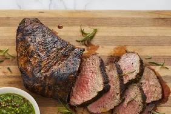

Santa Maria Grilled Tri-Tip Beef

A Santa Maria tri-tip marinade of spices and herbs makes this recipe spectacular. The town of Santa Maria, California, is home to one of America's most delicious barbecue specialties: black-on-the-outside, pink-on-the-inside, grilled beef tri-tip steak. The tri-tip is cut from the bottom sirloin and when cooked properly, produces a very flavorful, incredibly juicy piece of beef.
Just 12 ingredients and only 45 minutes of hands-on time.
Be prepared to wow in only 5 1/2 hours of total time!
Ingredients
- 2 Teaspoons Salt
- 2 Teaspoons freshly ground Black Pepper
- 2 Teaspoons Garblic Powder
- 1 1/2 Teaspoons Paprikia
- 1 Teaspoon Onion Powder
- 1/4 Teaspoon Cayenne Pepper
- 1 (2 1/2 Pound) Beef Tri-Tip Roast
- 1/3 Cup Red Wine Vinegar
- 1/3 Cup Vegetable Oik
- 4 Cloves crushed Garlic
- 1/2 Teaspoon Dijon Mustard
Directions
- Stir salt, black pepper, garlic powder, paprika, onion powder, rosemary, and cayenne pepper together in a bowl.
- Place tri-tip in a glass baking dish and coat on all sides with spice mixture. Cover the dish with plastic wrap and refrigerate for 4 hours.
- Combine vinegar, vegetable oil, crushed garlic, and Dijon mustard in a sealable container. Cover the container and shake until ingredients are blended.
- Remove tri-tip from the refrigerator. Let sit uncovered at room temperature for 30 minutes.
- Preheat an outdoor grill for high heat; lightly oil the grates.
- Place tri-tip on the preheated grill and brush with vinegar mixture. Cook for 4 minutes, flip, and baste. Flip and baste every 4 minutes until tri-tip starts to firm up and is reddish-pink and juicy in the center, 25 to 30 minutes total. An instant-read thermometer inserted into the center should read 130 degrees F (54 degrees C). Let rest for at least 10 minutes before slicing.